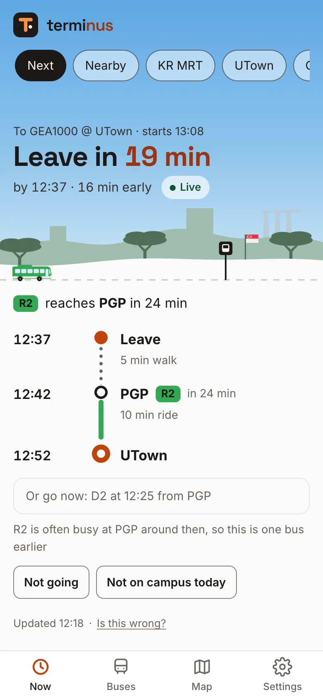
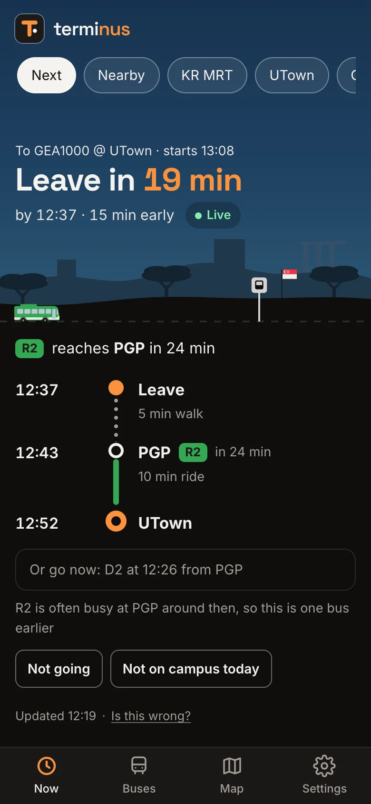
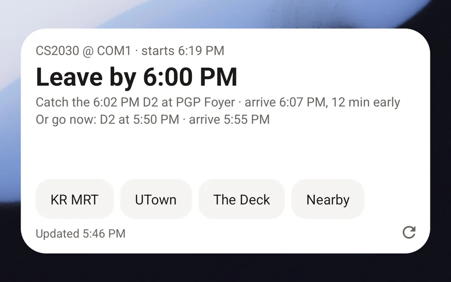
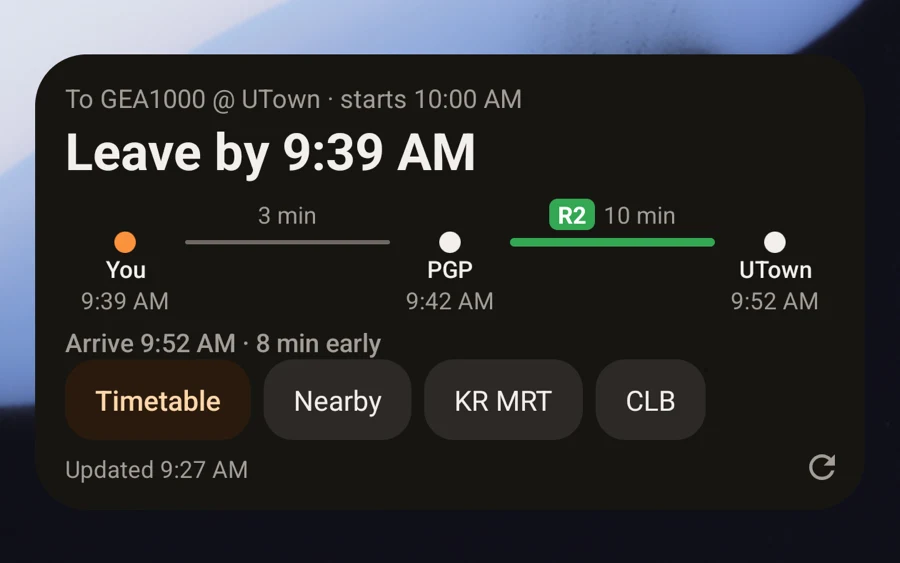
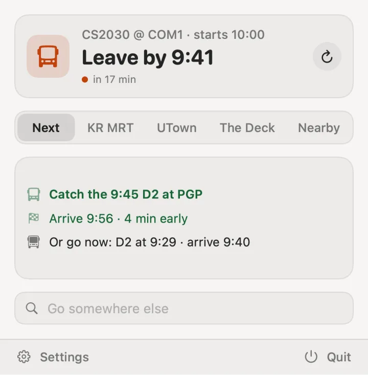
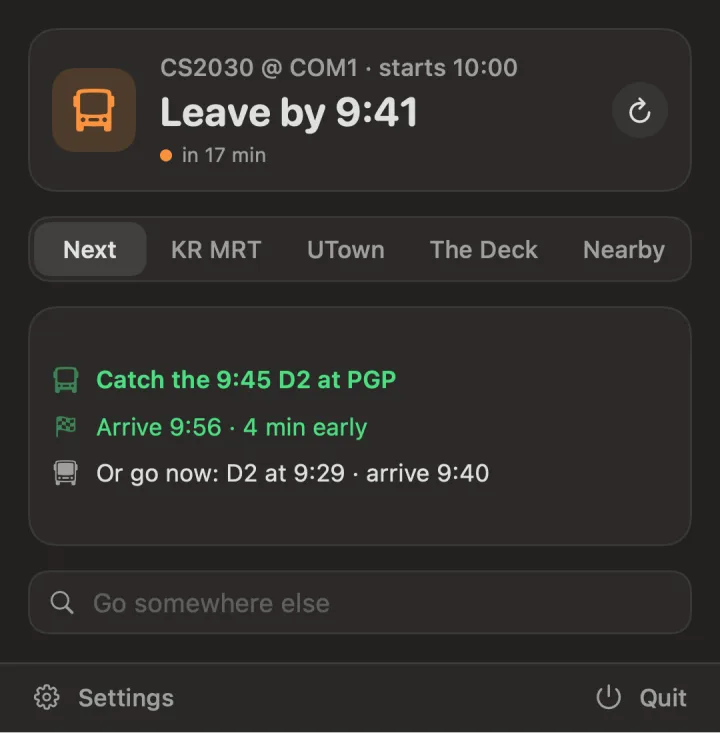
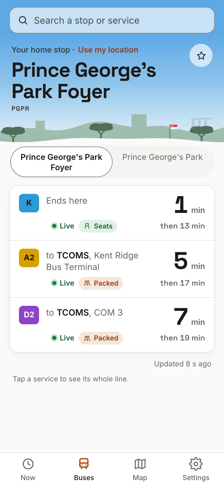
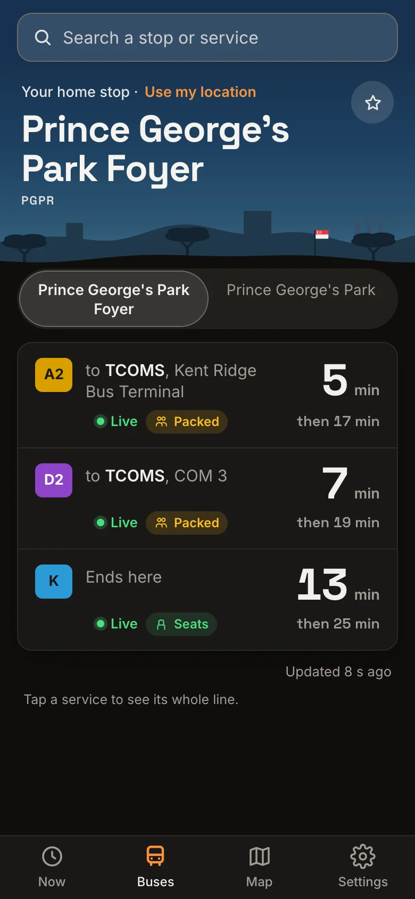

On the web
The app in any browser, under a sky that follows the hour, with your trip drawn as a line. Add it to your home screen like an app, with notifications when it's time to leave.


The app in any browser, under a sky that follows the hour, with your trip drawn as a line. Add it to your home screen like an app, with notifications when it's time to leave.


A widget that keeps itself up to date, with your favourites one tap away, and a live notification when it's time to go.


When to leave, in the menu bar. Click for the whole trip, your favourites, or anywhere else on campus.


The Buses tab: search any stop or service for what's coming, live, and how full it usually is. On Android and the web.